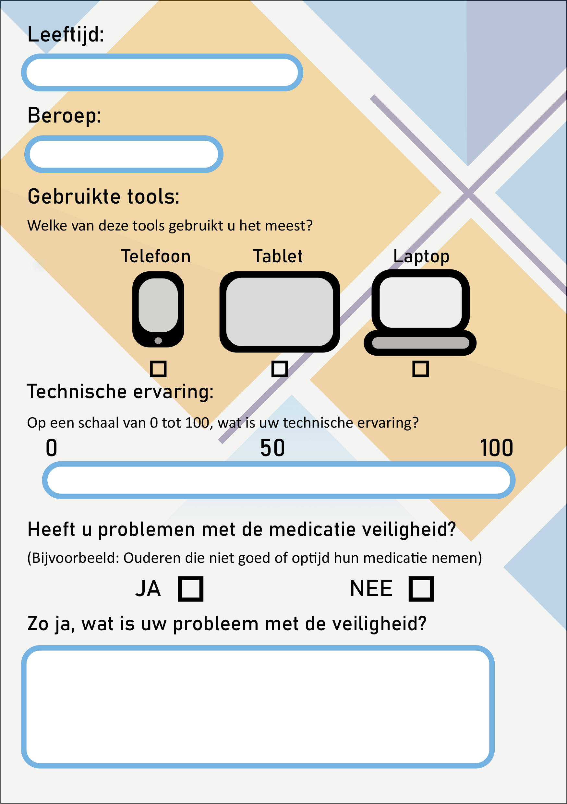
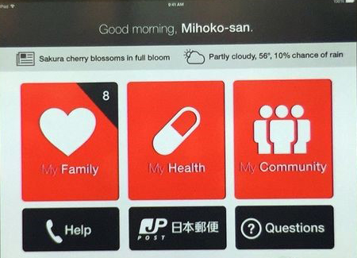
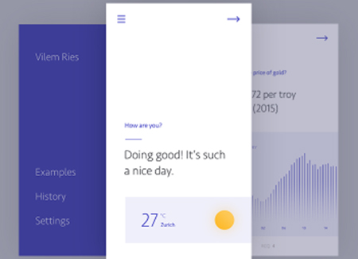

UX
Gate 1
De Doelgroep
Het is natuurlijk ook belangrijk om een goede user experience te creëren binnen het product. Hiervoor was deze eerste gate ook zeer belangrijk, aangezien er hier vooral werd opgesteld wat het probleem is, wie de doelgroep is en wat de onderliggende problemen zijn. Ook word er al gekeken naar hoe wij de problemen eventueel kunnen oplossen of zo min mogelijk kunnen maken.
Allereerst zijn wij gaan kijken naar de doelgroep. Door de opdrachtgever zelf waren er al 3 doelgroepen opgesteld.
- De zorgprofessional (dit is bijvoorbeeld de thuiszorg, medisch medewerker of huisarts)
- De mantelzorger (mensen uit het netwerk van de client (of een netwerk met vrijwilligers)
- De client (dit kan een oudere zijn of iemand met een andere medische of fysieke aandoening)
En aangezien het probleem was:
“Ons project houdt in dat wij een tool moeten designen die de thuiszorg en oudere gaan helpen met het thuis wonen en de verschillende obstakels die hierbij komen kijken. “
Was het vooral belangrijk om op de zorgprofessional doelgroep en de oudere doelgroep te focussen. Om dit te doen hebben we 2 onderzoekstechnieken gebruikt om de doelgroep te ondervragen.
Enquete
Er is een enquete rondgestuurd voor de verschillende zorgverleners. Hierdoor wordt er onderzocht wat deze doelgroep denk over de medicatie veiligheid. In deze fase van het onderzoek wordt er ook nog goed gekeken wat de technische vaardigheid is van deze doelgroep. Er was gelukkig makkelijk contact te zoeken met deze groep aangezien onze ouders allebei in deze sector werken.
Er is een enquete gemaakt met verschillende vragen:
De leeftijd, Beroep, Devices die op het moment gebruikt worden, technsiche ervaring, en natuurlijk of ze een probleem hebben met de medicatie veiligheid op het moment.
De enquete is ontworpen om zo duidelijk mogelijk te zijn, hierdoor zijn ze de minimale tijd bezig met het invullen. Het was wel een challenge om deze te ontwerpen om zo veel mogelijk informatie te krijgen uit de doelgroep.
De resultaten waren wel zeer behulpzaam.
De gemiddelde leeftijd van de zorgverlener is 44jaar.
En het beroep verschild tussencontactpersoon enindividuele zorg.
De twee groepen waar enquetes zijn afgenomenwerken wij bij twee verschillende zorgverleners.
De doelgroep van Julian werkt bijBrabantZorg en de doelgroep van Swen werkt bij Zuidzorg.
De algemene zorg die de verleners geven is over de grote lijn wel hetzelfde, en verschil zit hemdan wel in de regelingbuiten de zorg, dus heeft het weinig invloed op onze test verder.
Over de grote lijnhadden weinig zorgverlenersproblemen met de medicatie veiligheid binnen het werk. Maar het aantal dat er problemen mee heeft, heeft vooral problemen met de volgende problemen.“Dat ze teveel innemen, vergeten in te nemen.”“Medicatie ligt altijd binnen handbereik, waardoor het gevaar van ‘foute inname’aanwezig blijft.”“cliëntendie het vergeten of het verkeerde innemen.”Al deze zorgverleners die hier problemen mee hebben werken ookvooralals wijkverpleegkundige waardoor ze dit waarschijnlijk sneller meemaken. De leeftijd had hier verder geen invloed op.
Onderzoeks Methodes
| Interview | Enquete |
|---|---|
| Om de doelgroep beter in beeld te brengen is het handig om een interview te houden. Hierdoor kan je makkelijk vragen stellen aan de doelgroep en hier ook makkelijk op doorvragen, door door te vragen op de antwoorden kun je nog specifieker het probleem in beeld brengen en eventueel ook al ideeën voorstellen om te vragen hoe de doelgroep hier over denkt. | anneer er niet veel tijd is om de doelgroep alle te interviewen is het ook handig om Enquetes aan verschillende mensen van de doelgroep te geven. Het gaat een stuk sneller dan interviews afnemen en is goed te gebruiken als je op grote groepen vaak dezelfde vraag moet stellen. Je kan dit vooral gebruiken om eenvoudige vragen te beantwoorden voordat je begint aan het product. |
Interview
Door een interview te houden met een oudere kan je gemakkelijk in kaart brengen waar deze nu echt mee zitten, en gemakkelijk doorvragen op deze onderliggende problemen.
Het interview is gehouden met een client uit de doelgroep ‘ouderen’. Deze is geïnterviewd met als doel een dieper inzicht te kijken hoe de ouderen nu daadwerkelijk tegen het probleem van medicatie veiligheid aankijken. Het is dus vooral belangrijk om goed door te vragen op de problemen. Er is hierbij vooral uitgekomen dat ze vooral problemen had met de ‘reactie tijd’.
Wanneer de mevrouw op de grond viel lag ze soms wel 4 uur op de grond voordat er een grotere groep van mensen haar overeind kon helpen. Ze had dan wel een alarm knop, maar van deze wist ze niet of die überhaupt wel werkt of dat er nog wel goede batterijen in zitten. Voor de dispenser is het probleem dat ze gemakkelijk alle pillen uit de dispenser kan halen. Het is ook een probleem dat wanneer deze er uit zijn gehaald, ze hier geen reminder meer over krijgt. Ook als ze eventjes de deur uit is tijdens dat de medicatie eruit komt ze hier natuurlijk ook geen reminder van krijgt. Ook is de levering van de medicatie niet goed beveiligd, het wordt vaak door de brievenbus geduwd en verder niet meer naar gekeken, het komt dus vaak voor dat de ouderen niet weten wanneer de medicatie is binnengekomen.
Enquete ontwerp
Gate 2
Onderzoeken
Door de uitbraak van het virus is er in plaats van veel veld onderzoek geswitched naar veel bieb onderzoek. Dit ging ondanks de situatie even niet anders, maar hierdoor is er wel meer aanraken geweest met verschillende delen van het .NET Framework. Aangezien we het bieb onderdeel nog niet veel hebben aangeraakt.
Veel van deze bronnen komen vooral van medische sites met betrouwbare bronnen. Aan het begin van GATE 2 zijn er 3 verschillende richtingen opgesteld waarin onderzoek gedaan moet worden. De dispensers, monitoring en autoriteitsverplaatsing. Hier zijn voor ieder gedeelte twee personen opgezet om hierover onderzoek te doen.
Het doel van op deze manier onderzoek doen is, nadat al het onderzoek gedaan is, weer bij elkaar te komen en hierdoor vanuit verschillende denk richtingen te kijken naar het concept. Doordat er op verschillende manieren onderzoek is gedaan, komt er een eventueel verassende oplossing of idee naar boven waar nog niet eerder aan gedacht is.
Ik en Julian hebben ons verdiept in het onderzoek van de dispenser. Kijkend naar interfaces voor oudere, conditionering en veiligheid voor deze dispensers. Hierbij hebben wij verschillende bronnen betrokken die niet alleen bieb maar ook deskundig geraadpleegd zijn, zoals mensen die echt in het veld werken.
Concept Testen
Mijn moeder werkt ook als zorgverlener bij de thuiszorg, dus hier kan ik gelukkig goede feedback aan vragen over ons concept en hoe zij denkt dat dit idee zich staande gaat houden verder in ontwikkeling. Het is natuurlijk van groot belang om genoeg feedback te vragen op het concept om te kijken of we de goede richting in aan het gaan zijn, en nu is dat in deze situatie nogal lastig geworden, heb ik toch geprobeerd om nog wat 'veld' onderzoek te doen.
Het idee vond ze wel belangrijk, vooral het modulaire systeem van de medicijn dispenser. Ze wist alleen niet zeker of dat met intent zo gemaakt was dat alle medicatie wanneer verwisseled vernietigd ging worden, door redenen bij de pharmacisten. Ook het idee van de zorgrobot die de demente cliënten hielp om zich beter op hun gemak en minder alleen te laten voelen vond ze een mooi idee, het ging er haar vooral dan om dat dit goed uitgekozen moest worden qua geluidjes dat het robotje ging afspelen wanneer een bepaalde melding werd gegeven, en hoe de client eraan herinnerd werd dat om een bepaalde tijd de medicatie eruit zal komen. Dit was vooral het geval wanneer een client de deur uit ging zonder de medicatie te nemen, aangezien de reminder dan zo hard kan piepen als hij wil, maar het geen effect zou hebben.
Interface
Ouderen hebben vaak problemen met geheugen en concentratie, het is hiervoor dus duidelijk dat de handeling die ze moeten doen vaak goed geconditioneerd is zodat ze dit beter onthouden. Er moet bij onze interface dus een manier zijn waarop we die zo kunnen bouwen dat het de ouderen helpt met het behalen van hun doel, maar ook dat ze leren hoe ze deze handeling nog een keer moeten uitvoeren.
Hierbij kwam associatie leren het beste uit de test. Associatie leren maakt gebruik van alle zintuigen om zo een nieuwe handeling te leren. Het is voor ons dus goed om dan gebruik te maken van audio queues en visuele stimuli, eventueel ook nog inspelend op reuk. Hierdoor klikt de handeling sneller bij ouderen dan wanneer ze dit met de minimale hoeveelheden zintuigen moeten herkennen.
Het is ook belangrijk om zo min mogelijk informatie op het scherm te plaatsen. Informatie verwerking voor ouderen gaat al langzamer, dus wanneer hier nog extra bovenop wordt gegooid wordt dit allemaal veel lastiger. Er moet dus gekeken worden naar minimalistische design, want ‘less is more’.
 Dit is een goede interface voor ouderen omdat het design minimalistisch is, alle onnodige elementen zijn eruit gefilterd. Het geeft duidelijk aan wie er op het systeem zit op het moment met een vriendelijke message boven aan de interface. De knoppen zijn lekker groot zodat alles goed te lezen is, vervolgens is er een relevant icoon bij de belangrijke dingen
Gate 3
Dashboard Design
Tijdens Gate 3 zijn we als groep begonnen met het feedback van de opdrachtgever te verwerken. Er kwam hier aan bod dat we goed bezig zijn en ze graag willen zien hoe wij de producten verder zullen uitwerken, hierbij werd er vooral gevraagd naar het dashboard van de zorgverleners en hoe wij deze willen gaan uitwerken.
Hier zijn wij dus als groep mee begonnen uit te werken. Het plan was dat iedereen een eigen dashboard zou ontwerpen en dat we uiteindelijk de verschillende onderdelen uit de verschillende dashboard bij elkaar zouden voegen. Hierdoor krijgen we een gezamenlijk product dat vanuit meerdere invalshoeken is gemaakt.
Ik ben vooral vanuit een ontwerpende blik gaan kijken, en heb hierbij al een aantal guidelines en principes achter in mijn hoofd gehouden tijdens het ontwerpen van mijn dashboard die het design zouden verbeteren voor de zorgverleners. Uit onderzoek was al gekomen dat de zorgverleners vooral veel op tablets te werk gaan, dus werd er rekening mee gehouden dat het op dit formaat gemaakt werd.
Tijdens het ontwerpen vond ik het ook belangrijk om de user-journey in mijn hoofd te houden: hoe gaat de gebruiker door de app heen en welke stappen zijn dus intuïtief voor de gebruiker. Hierbij moest er wel op gelet worden dat de doelgroep niet alles van apps afwist, maar wel een basis begrip had van hoe er door de meeste apps bestuurd moest worden.
Dit waren de eerste aantal iteraties voor mijn dashboard. Ik heb het dashboard ook weer getest met een persoon binnen de doelgroep, deze heeft mij weer bruikbare feedback gegeven om mijn project te verbeteren.
De algehele beleving vond deze persoon goed, het zag er goed uit en fijn dat het ook gepersonaliseerd werd met een afbeelding van de cliënt. Sommige functies waren echter nog niet helemaal duidelijk zoals de dispenser pagina, en het monitoren gedeelte van het dashboard.
Uiteindelijk heb ik mijn feedback van de gebruiker en de docenten verwerkt in het gezamenlijke dashboard, binnen dit ontwerp zijn ook meerdere functies vanuit mijn prototype naar voren gekomen, zoals de bolletjes als status, de dispenser status en de monitoring pagina.

Dit is het uiteindelijke ontwerp van het dashboard geworden, het is vanuit de basis van Julian verder gebouwd met verschillende functies vanuit mijn eigen dashboard en dat van Iza. Hierbij is vooral ook weer gekeken naar de user-journey en hoe houden we het ontwerp zo duidelijk mogelijk voor de gebruiker zodat deze binnen één oogopslag kan zien wat er aan de hand is binnen het dashboard.
IxD
Concept: Dashboard voor de zorgmedewerkers. Het dashboard is ontworpen voor zorgmedewerkers om zo gemakkelijk informatie over de cliënten en de dispenser te bekijken. Op het dashboard zijn verschillende key-factors zeer belangrijk zoals: Client status, info, monitoring en de dispenser status. De medewerker krijgt over deze key-factors informatie te zien die gebruikt kan worden tijdens het werk. Het is belangrijk voor de zorgmedewerker om snel te kunnen zien wat de status is van de client, zodat ze weten of en wanneer ze moeten ingrijpen.
Organisatie: Het product is zo ingedeeld dat het hoofd dashboard met de persoonlijke informatie altijd te zien is over de aangegeven cliënt. De status van de client staat hierbij centraal. Aan de linkerkant van het scherm is een lijst te zien met de namen van de verschillende cliënten van de medewerker, achter deze namen staan verschillende bolletjes die de status van de client aanduiden. Wanneer de status van de client als gevaarlijk wordt gezien wordt het bolletje rood en komt hij bovenaan in de lijst te staan. In het midden van het scherm is algemene informatie te zien over de client: (Naam, type patiënt, etc.) En hieronder staan verschillende knoppen voor nog verdere informatie.
Informatie over de dispenser, het monitoren en specifiekere informatie over de client zijn (na het drukken op de bijbehorende knop) aan de rechterkant van het scherm te vinden. Deze geven meer informatie aan en wanneer de client in een gevaarlijke status is verwijzen ook meteen door naar het specifieke probleem van de client.
Client Info: De client informatie staat voor een groot gedeelte vast, maar het ‘general info’ gedeelte kan aangepast worden door een zorgmedewerken, hier kunnen ze eventuele notities plaatsen wanneer er een speciaal geval is, als de client op bepaalde dagen uit huis is, of als er een bepaalde medicatie maar voor een gelimiteerde tijd genomen moet worden.
Monitoring: Het monitoren wordt allemaal automatisch geüpdatet door de e-pleister. Deze houdt de opbouw van het bloed bij en past deze automatisch aan wanneer er een verandering plaats vindt. De uitgaven momenten van de dispenser kunnen hier ook gevonden worden, en er kan hier ook gezien worden of de medicatie al genomen is van dat moment.
Dispenser Staus: Hier wordt de status van de dispenser bijgehouden. Er wordt gekeken welke medicatie er op dat moment in de dispenser zit en de hoeveelheden van deze medicatie. Dit wordt door de dispenser ook allemaal automatisch bijgehouden en teruggekoppeld aan het dashboard.
Visuele stijl: Een rustige / medische stijl. Er is gekeken hoe het design zo minimalistisch mogelijk gemaakt kan worden, hierbij is vooral gekeken naar lichte kleuren en het Eurocom kleurenschema dat is opgesteld. Verder zijn alleen de status van de clienten icoontjes met felle kleuren, dit is gedaan omdat dit het hoofddoel is van het dashboard en er binnen één oogopslag gezien kan worden wat de status is van de client. Wanneer er een gevaarlijke situatie is bij de client is de kritieke status van de bijbehorende informatie ook in rood gekleurd.
Verder is het scherm vrijwel hetzelfde ingericht op ieder moment, met de clienten aan de linkerkant de info over de client en het menu in het midden en de verdere informatie aan de rechterkant, dit zorgt voor een gehele consistency in de app die fijn is voor de gebruiker. Verder is het op formaat van een tablet gemaakt, dit is gedaan met de reden dat de zorgmedewerkers deze device het meeste gebruiken binnen hun werkomgeving en hier het meeste bekend mee zijn.
Interaction stijl: Het product is op tablet formaat ontworpen, dit betekend dat alles met een touchscreen mogelijkheid te bedienen is. Dit zorgt er ook voor dat de icoontjes en de tekst een bijbehorende grootte moeten hebben die goed te lezen is. Verder zijn alle onderdelen waarmee geïnteracteerd kan worden omlijnd met een lichtblauwe rand, en de niet interacteerbare onderdelen met een oranje rand. De verschillende menu’s zijn uitschuifbaar, dus wanneer de cliënten lijst niet nodig is kan deze geminimaliseerd worden, hierbij is de status nog wel te zien van de cliënten, dus mocht de lijst nog geminimaliseerd zijn maar komt er wel een gevaarlijke status binnen is deze nog wel zichtbaar.
Usability: Het product is ontworpen voor gebruikers die gebruikelijk met devices omgaan, ze weten hoe ze door de meeste apps moeten navigeren. Het is natuurlijk nog steeds belangrijk om de hoeveelheid informatie gelimiteerd te houden en de acties intuïtief te maken voor de gebruiker, (door lijsten kan je scrollen, menu’s hebben logische icoontjes, aanpasbare tekst staat in een speciaal vak, etc.) Dit is getest met een gebruiker uit de doelgroep waarvoor het product ontworpen is. Wat er nog beter kan is dat de informatie beter gecategoriseerd wordt onder de menu’s, en dat sommige onderdelen van het dispenser menu beter gevisualiseerd worden.
User Experience: Het product is getest met een gebruiker uit de doelgroep, deze heeft verschillende stappen doorlopen om door de app zich te verplaatsen en hierbij was de algehele ervaring vrij duidelijk. Er waren nog wel een aantal verbeterpuntjes die nog eventueel toegevoegd kunnen worden waardoor het dashboard nog bruikbaarder kan worden binnen de werkomgeving.
| Tops | Tips |
|---|---|
| Leuk dat het gepersonaliseerd is met een foto van de client. | Wat betekenen de kleuren van de bolletjes, wanneer worden ze welke kleur? |
| Het monitoring onderdeel is zeer interessant. | Verschillende extra onderdelen bij het monitoring zou nog interessant zijn? |
| Fijn dat je snel kan zien welke client hulp nodig heeft. | Welke vorm heeft de dispenser? |